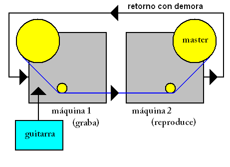 |
Sistema conformado por 2 máquinas Revox de cinta abierta interconectadas
de tal forma que la cinta que sale del carretel de la primera es tomada por el
carretel de la segunda. El sonido generado por la guitarra es grabado por la
primera máquina y es reproducido por la segunda con una pequeña demora. El
audio de la segunda máquina vuelve a entrar a la primera con otro retardo y con volumen
disminuido, y
vuelve a grabarse, mezclándose con nuevos sonidos que entran desde la guitarra.
De esta forma se van creando capas de sonidos de guitarra eléctrica
en tiempo real, una sobre otra, desapareciendo con el tiempo las capas más
antiguas. Tanto el nivel de la disminución del volumen como la duración del
retardo podían ajustarse. En algunos momentos Fripp desconectaba su guitarra del
circuito de repetición y punteaba por sobre la base
de capas que seguía reproduciéndose. Para efectos de sonido usaba pedalera. Este sistema
fue usado por Fripp y Eno en sus 2 primeros discos juntos (No pussyfooting
y Evening star), pero Fripp realizó frippertronics puro en vivo por
primera vez (aunque aún no tenía este nombre) durante la pequeña gira europea
que
hizo con Eno a comienzos del '75. Durante 1978 y 1979 Fripp profundizó el
trabajo con este sistema, el cual fue apodado frippertronics por quien era su
pareja en ese momento, Joanna Walton.
|
|
Frippertronics en Zurich, mayo de 1979
|

|
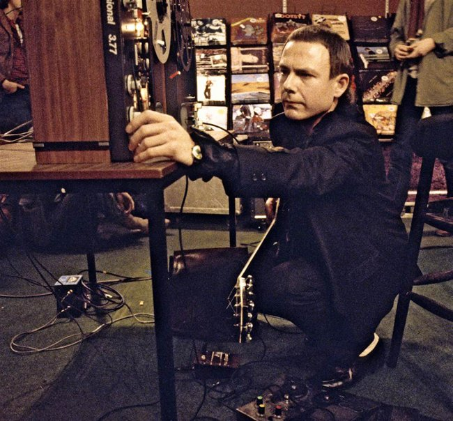
Abajo x3: presentación de frippertronics en Pizza Express,
Notting Hill, Londres, 25/04/1979. En la última foto de abajo: Fripp y su frippertronics en Munich, 22/05/1979.
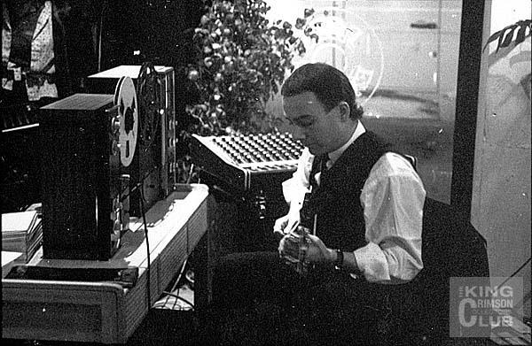
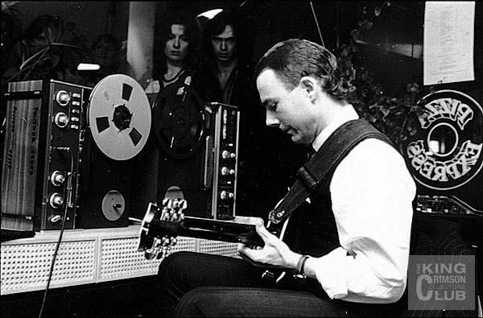
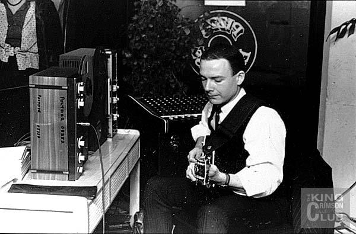

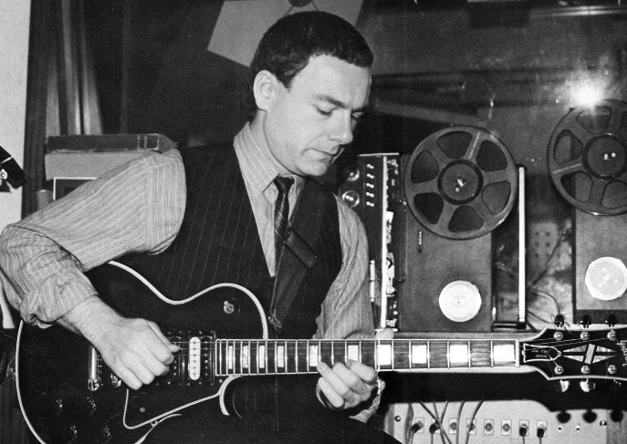
Minneapolis, 22/06/79
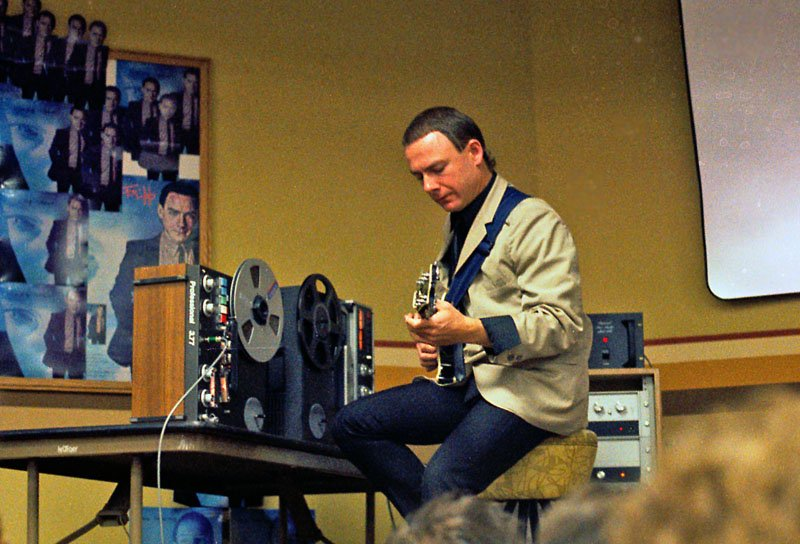
Bloomfield, 7/7/79
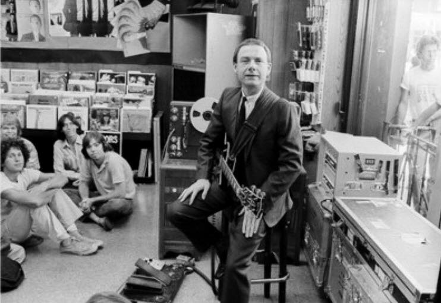 Tower
Records, California, julio de 1979
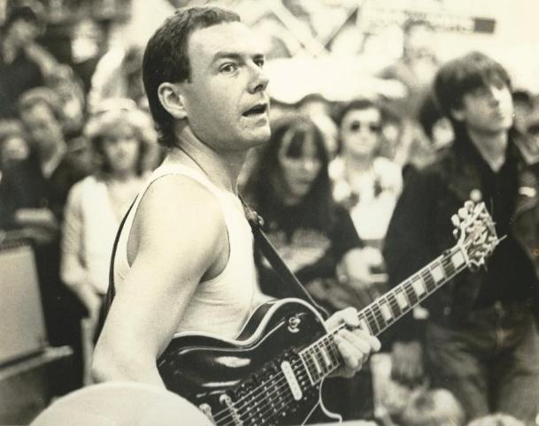
Presentación de frippertronics en 1979 en Seattle. El joven
que se ve a la derecha de la imagen es Bill Rieflin, quien grabaría con Fripp a
fines de siglo y sería parte de KC desde fines de 2014 hasta su muerte en marzo
de 2020.
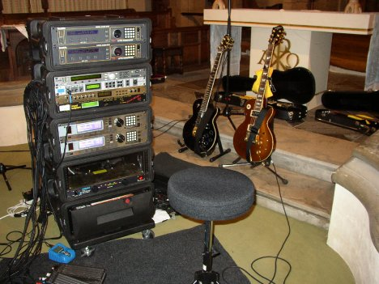 |
En los años '90, las máquinas de cinta analógicas fueron reemplazadas por
dispositivos y procesadores digitales y sintetizadores de guitarra, todos
encajados en un rack, con los que Fripp realiza los soundscapes (paisajes
sonoros), que
respetan los conceptos de capas y retardos del frippertronics. Además con este
rack Fripp realiza infinidad de efectos e imita cualquier otro instrumento
(vibráfono, órgano, piano, violín, flauta, voz humana, etc.). Con esto, KC no necesitó más el
melotrón. En las fotos, Fripp, su rack y su pedalera.
|
|

|
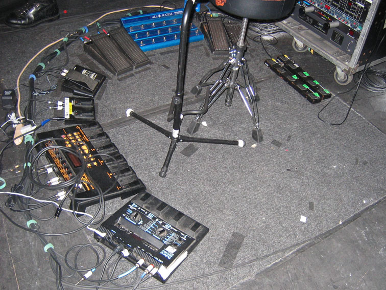 |
|
 Frippertronics
Frippertronics